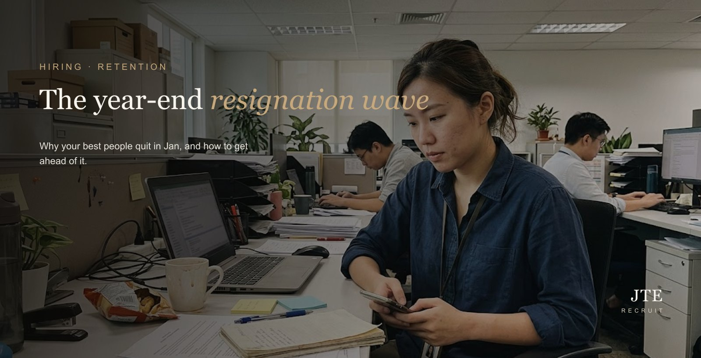
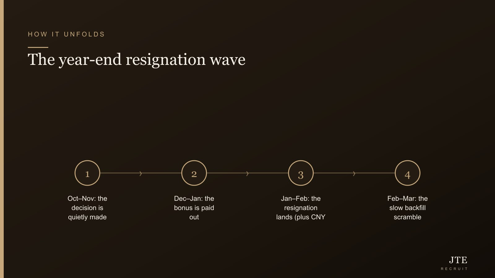

Here’s the pattern, and it’s almost clockwork. The year-end bonus clears the bank. A few weeks later, somewhere between the new year and Chinese New Year, the resignation letter lands — and it’s rarely from the person you were happy to see go. It’s the quiet, reliable one who holds a chunk of the business together. Then you’re trying to backfill in January and February, which is just about the worst month of the year to be hiring.
I wear two hats here: I run an SME and I run a recruitment firm. So I see this from both sides, every single year. And the frustrating part is that it’s almost entirely predictable — which means it’s almost entirely preventable, if you move before the wave instead of after it.
Why it always happens in January and February
There’s no mystery to the timing. People don’t quit before the bonus — they wait for the money, because walking away from it is expensive. Once it’s paid, the handbrake comes off. So the resignations that were quietly decided in October and November only surface in January, once the cash is in hand.
In Singapore there’s a second nudge stacked right on top: Chinese New Year, which falls around mid-February in 2027. It’s a natural reset point — a clean line in the calendar where people take stock, see family, compare notes, and decide this is the year they finally make the move. Bonus plus festive reset is a potent combination, and it all lands in the same short window.

“But the market’s cooler now — surely they’ll stay?”
This is the comforting story employers tell themselves, and it’s where a lot of them get burned. Yes, the headline market has softened. MOM’s Q2 2026 Labour Market Report, released on 21 September 2026, showed overall job vacancies falling to 68,600 in June 2026, with retrenchments rising.
But look one line down. In the same report, there were still 1.48 vacancies for every unemployed person in June 2026. In plain English: good people still have options. A cooler market trims the froth — the speculative movers and the average performers — but your strongest people are exactly the ones who can still walk into something else. A softer market is not a moat. Don’t mistake “fewer job ads” for “my best won’t leave.”
Takeaway — A cooler hiring market doesn’t keep your best people; it just thins the queue behind them. The ones you most want to keep are the ones who still have options, bonus or no bonus.
Why backfilling in February is so brutal
The cruel twist is that the exit and the hiring crunch land at the same moment. You lose someone fast, and you replace them slowly, because everyone else is playing the same waiting game:
- Candidates are sitting on their own bonuses. The person you want to hire is doing exactly what your leaver did — waiting for their payout before they move. Reach out in January and many simply won’t engage yet.
- Half the market is on leave. Between year-end and Chinese New Year, decision-makers, candidates and references are all in and out. Processes that take two weeks in June take six in February.
- Notice periods push everything right. Even when you find someone in February, a one- or two-month notice means they start in April. That’s a long time to cover a gap in a role that mattered.
So the instinct to “wait until they resign, then start looking” is the single most expensive thing you can do. You begin a cold search at the slowest point in the year, for a role you can’t afford to leave open.
Move before the wave: line up hiring early
The fix isn’t complicated, it just has to happen in October and November rather than February. If you expect you might lose someone after bonuses — and in most teams there’s at least one — start the search before the resignation, not after it.
This is the part a recruiter earns their keep on. The best candidates for a January backfill are passive: employed, waiting on their own bonus, not reading ads. Warming them up takes weeks. Brief us now and we quietly build a shortlist through the quiet season, so the moment a resignation lands you’re moving on a warm list instead of starting from zero. If you want the honest numbers on that, our breakdown of what a recruitment agency actually costs in Singapore lays it out — and weighed against a key role sitting empty through Q1, the maths usually isn’t close.
Protect your key people now — before they’ve decided
Lining up a backfill is the safety net. Keeping the person is the better outcome, and that work has to happen before December, not after the letter arrives. By the time someone resigns, they’ve usually been checked out for months — the decision was made in October; January is just the paperwork.
So have the real conversation now. Not a performance review — an honest one about pay, path and workload. Is their number still fair against the market? Do they know what the next step looks like, and that it’s real? Are they quietly burning out on a load you haven’t noticed? If you wait until they hand in notice, you’re no longer retaining them — you’re counter-offering, and that’s a weaker position for everyone. It’s worth understanding why good people actually leave before you assume it’s only about money, and why a counter-offer rarely fixes the real reason once the resignation is already on your desk.
Map who leaves — and what breaks when they do
Not every resignation is a crisis. Spend an hour before year-end on a simple map: who on the team is most likely to move, and what actually breaks if they do. Single points of failure — the one person who knows a client, a system, a process — are where a January exit turns into a quarter of pain. Those are the people to protect first, and the roles to pre-brief for first. It also means that if a resignation does come, you’re reacting to a plan, not a surprise.
Don’t undo it all with a shaky first 90 days
One more trap, because I see it close the loop badly. You finally land the backfill in a tough market — and then a rushed, under-supported start loses them inside the first few months, and you’re back to square one in the middle of the year. If you’re hiring under pressure, be especially deliberate about onboarding; a hire that quits in the first 90 days is the most expensive outcome of the whole cycle. Winning the hire and then losing them to a bad landing is the worst of both worlds.
The bottom line
The year-end resignation wave isn’t bad luck and it isn’t new — it’s a season, and seasons can be planned for. Protect your key people now with honest conversations, map who’s most likely to go and what breaks if they do, and line up your hiring before the exodus so a February resignation meets a warm shortlist instead of a cold start. Do that and the wave becomes a ripple. Ignore it, and you’ll spend Q1 doing the most expensive hiring of the year.
Frequently asked questions
When does the year-end resignation wave actually hit?
It’s a seasonal pattern rather than a fixed date. Year-end bonuses tend to be paid out around December to February, and resignations cluster in January and February once people have the money in hand. With Chinese New Year falling around mid-February in 2027, that adds another nudge to turnover in the same window. Plan on the exits landing in Q1, not spread evenly through the year.
If the job market is cooler, won’t my best people just stay put?
Don’t count on it. MOM’s Q2 2026 Labour Market Report (released 21 September 2026) showed overall job vacancies fell to 68,600 in June 2026 and retrenchments rose — but there were still 1.48 vacancies per unemployed person. In plain terms, good people still have options. A cooler headline market does not mean your strongest performers can’t walk into something else.
Why is backfilling in January and February so painful?
You’re hiring in the slowest month of the year. Candidates are waiting for their own bonuses before they move, many are on leave over the festive period, and notice periods push start dates out further. So the exit and the hiring squeeze land at exactly the same time — you lose someone fast and replace them slowly.
What can I do now to get ahead of it?
Three things. Protect your key people before December with honest conversations about pay, path and workload. Map who is most likely to leave and what breaks if they do. And line up your hiring early — brief a recruiter now so passive candidates are already warm when a resignation lands, instead of starting a cold search in February.
Should I counter-offer someone who resigns in January?
Occasionally it buys time, but it rarely fixes the reason they were looking, and many counter-offered staff leave within the year anyway. It’s far cheaper to protect your key people before bonuses land than to bid against another employer once the resignation is on your desk. Treat a counter-offer as a short bridge, not a strategy.
How early should I brief a recruiter for a backfill?
Before the wave, not after. The best candidates for a January backfill are passive — employed, waiting on their own bonus, not reading ads. Reaching and warming them takes weeks, so briefing a recruiter in October or November means you have a shortlist ready to move the moment a resignation comes in, rather than starting from zero in a slow month.
If you suspect you’ll lose someone after bonuses, the time to move is now — not February. Tell us what you’re running and we’ll quietly line up the passive market so your backfill is ready before the resignation lands.